专题4.4 多边形和圆的初步认识
专题4.4 多边形和圆的初步认识

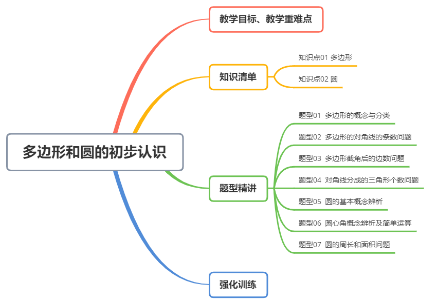

教学目标 | 1. 结合实例认识多边形、正多边形、圆及扇形，掌握顶点、对角线、圆心角等相关概念，丰富几何直观认知。 2. 经历从现实世界抽象平面图形的过程，能在情境中识别相关图形，发展抽象与表达能力。 3. 探索多边形对角线规律，能根据扇形与圆的关系求圆心角度数，提升推理能力。 |
教学重难点 | 1.重点 （1）核心是多边形和圆的相关概念，需清晰掌握多边形的边、内角、对角线及圆的圆心、半径等要素定义。 （2）关键是多边形对角线规律的探索与应用，以及扇形圆心角度数的计算方法。 2.难点 （1）难点在于多边形对角线条数规律的推导，学生难以从具体实例中抽象出通用公式。 （2）难点在于结合扇形与圆的整体关系计算圆心角，对“部分与整体”的比例关系理解不透彻。 |

知识点01 多边形
1.定义：由若干条不在同一条直线上的线段首尾顺次相连组成的封闭平面图形。
2.相关概念：顶点是相邻两条边的公共端点；边是组成多边形的各条线段；内角是相邻两条边所组成的角；对角线是连接不相邻两个顶点的线段。
3.性质：n边形有n个顶点、n条边、n个内角。从n边形的一个顶点出发，可以引出（n-3）条对角线，n边形对角线的总条数为n(n - 3)/2（n≥3，且n为整数）。
4.正多边形：各边相等、各角也相等的多边形叫作正多边形。
【即学即练】
1．过 边形的一个顶点最多可以画出
边形的一个顶点最多可以画出 条对角线，则的值是 ．
条对角线，则的值是 ．
【答案】
【分析】本题主要考查了过多边形的一个顶点作对角线的条数，过边形的一个顶点可以作 条对角线，可得
条对角线，可得
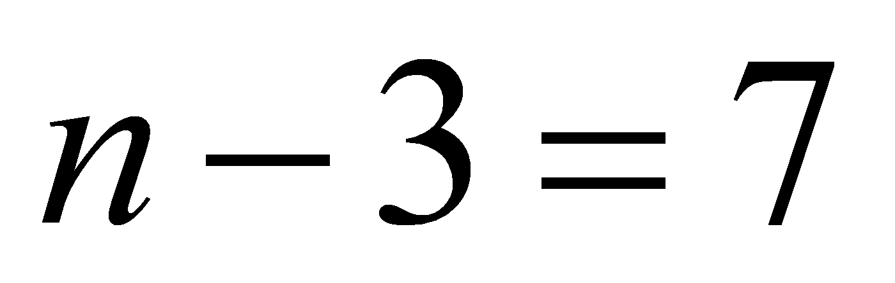
，求出答案即可．【详解】解：根据题意，得，
解得 ．
．
故答案为：．
2．如果过某多边形的一个顶点的对角线有9条，则该多边形对角线一共有 条．
【答案】54
【分析】本题考查了多边形的对角线公式，熟记从每一个顶点出发可以作的对角线的条数为
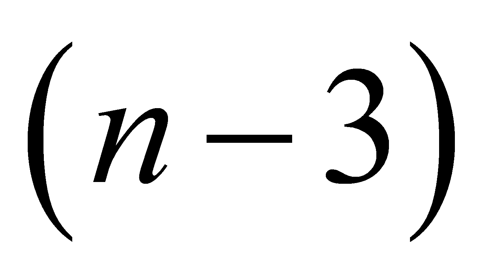
是解题的关键．根据从每一个顶点出发可以作的对角线的总条数为计算即可得到该多边形的边数（或顶角数），然后由n边形的对角线总条数公式为
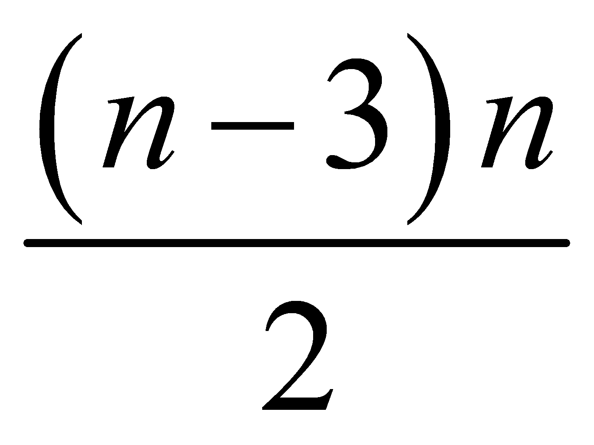
进行解答．【详解】解：：∵过一个多边形的一个顶点的对角线有9条，
∴多边形的边数为 ，
，
∴这个多边形是十二边形．
∴该多边形对角线一共有：
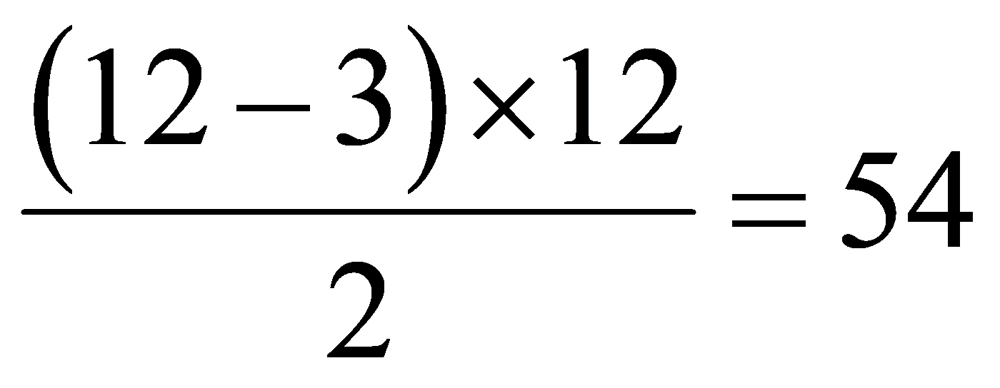
(条)，故答案为：54．
3．某中学八年级数学课外兴趣小组在探究：“边形
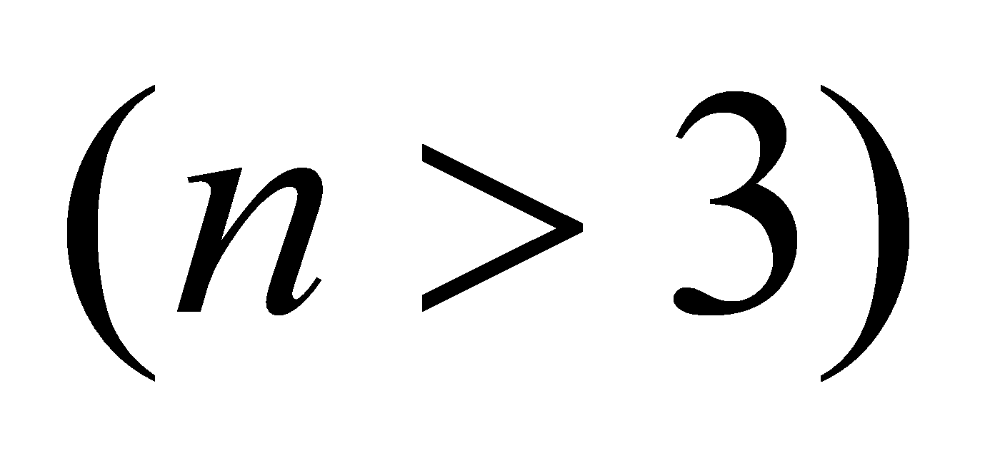
共有多少条对角线”这一问题时，设计了如下表格．请你完成探究过程并解决问题：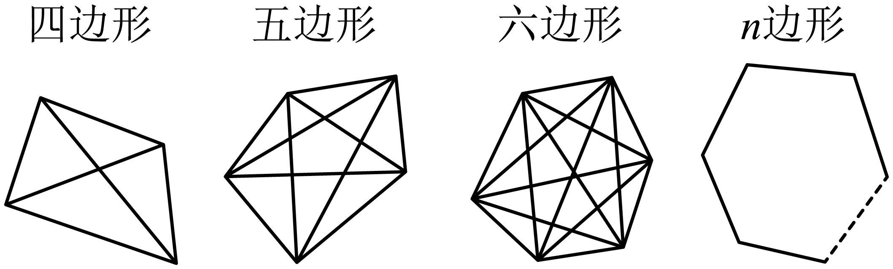
多边形的边数 | 4 | 5 | 6 | … | n |
从多边形的一个顶点出发 | 1 | 2 | ______ | … | _____ |
多边形对角线的总条数 | 2 | 5 | ______ | … | _____ |
(1)请在表格中的横线上填上相应的结果；
(2)十边形有__________条对角线；
(3)过多边形的一个顶点的所有对角线条数与这些对角线分多边形所得的三角形个数的和可能为2023吗？若能，请求出这个多边形的边数；若不能，请说明理由．
【答案】(1)3；9； ；
；
(2)
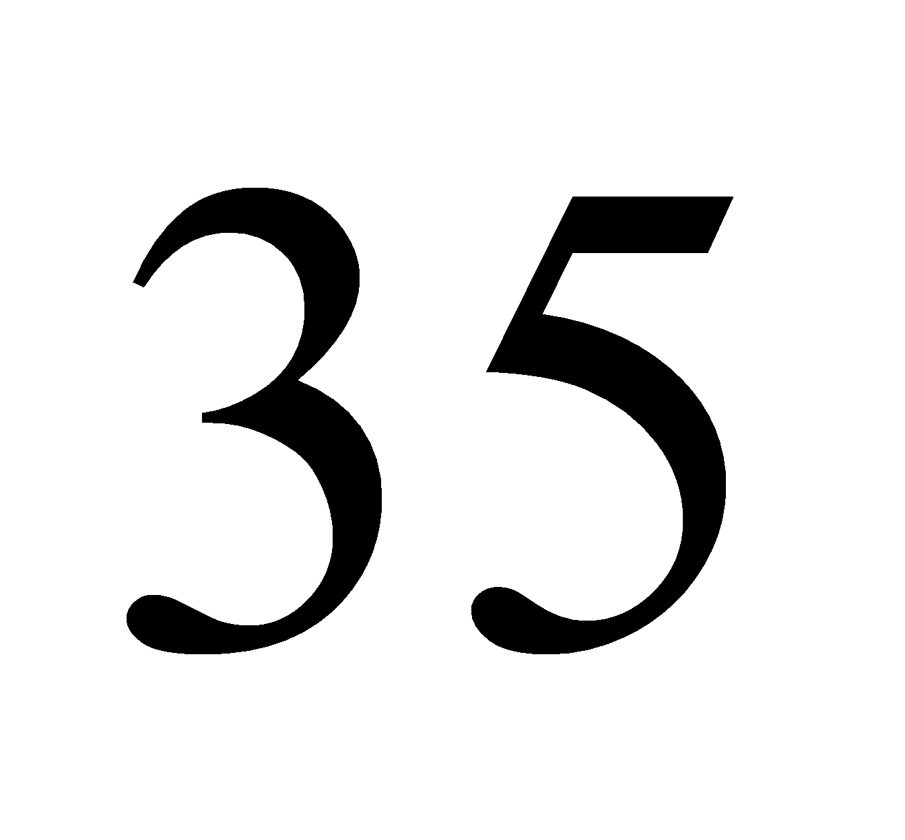
(3)能，
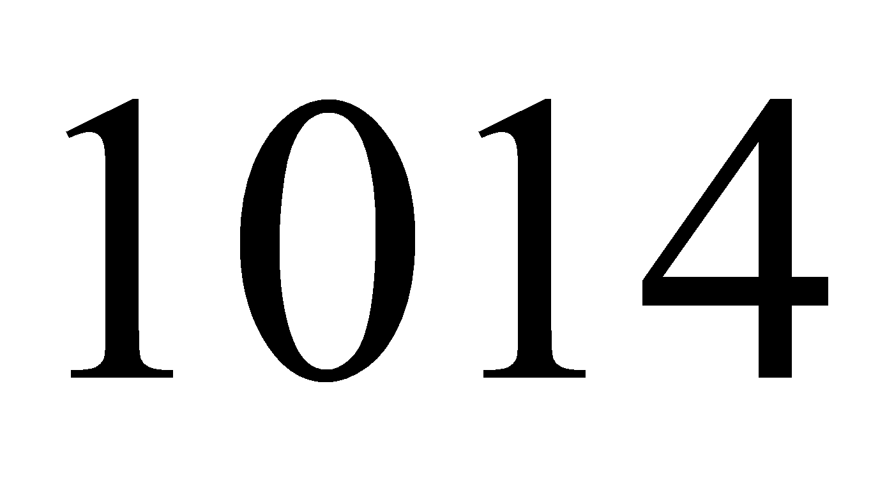
【分析】（1）根据从边形的一个顶点出发的对角线有
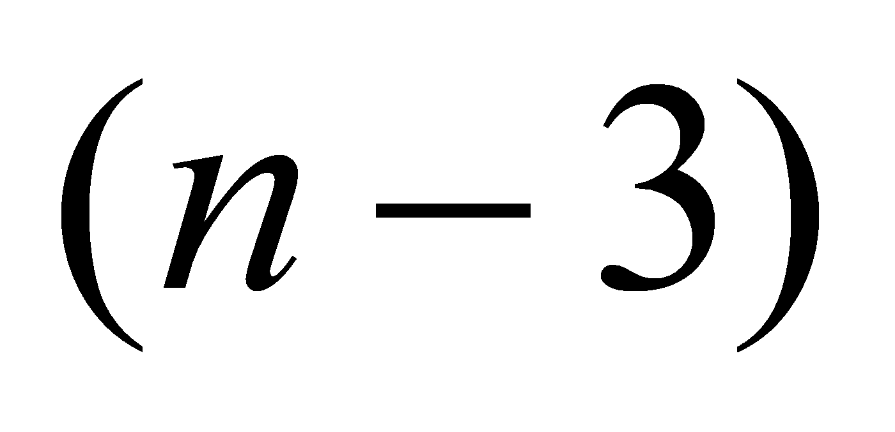
条，对角线的总条数为：进行计算即可得：（2）根据从边形对角线的总条数为：进行计算即可得：
（3）设这个多边形的边数为，则
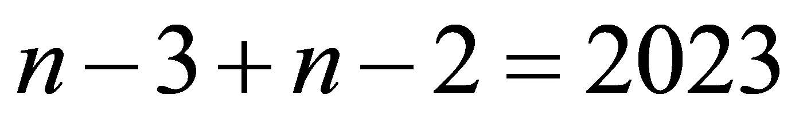
，进行计算即可得．【详解】（1）解：如图所示，
从六边形的一个顶点出发的对角线有：
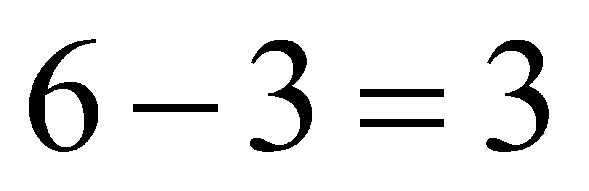
（条），则从n边形的一个顶点出发的对角线有：条，
六边形对角线的总条数为：
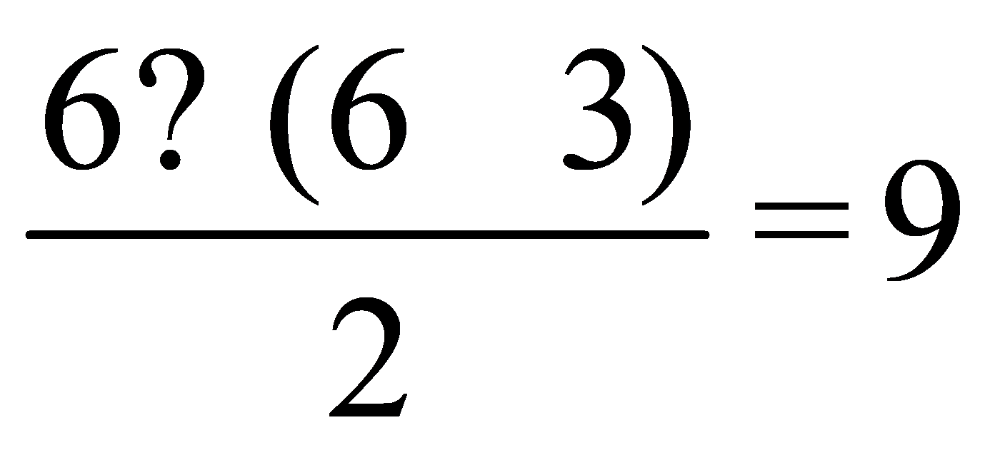
（条），n边形对角线的总条数为：，
多边形的边数 | 4 | 5 | 6 | … | n |
从多边形的一个顶点出发 | 1 | 2 | 3 | … | 9 |
多边形对角线的总条数 | 2 | 5 |
| … |
|
故答案为：3；9；；；
（2）解：十边形对角线的总条数为：
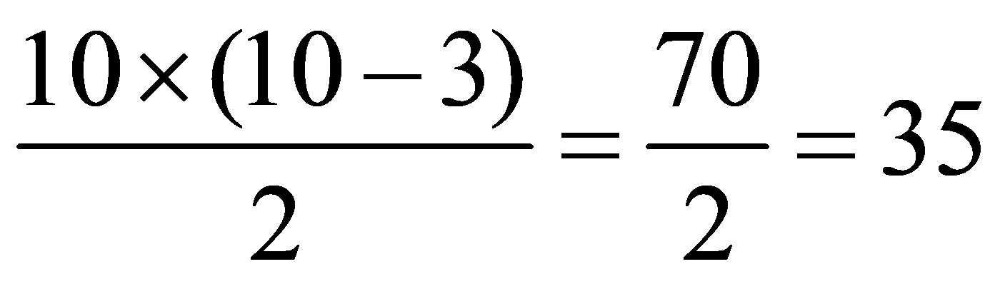
（条），故答案为：；
（3）能，理由：
解：设这个多边形的边数为，
，
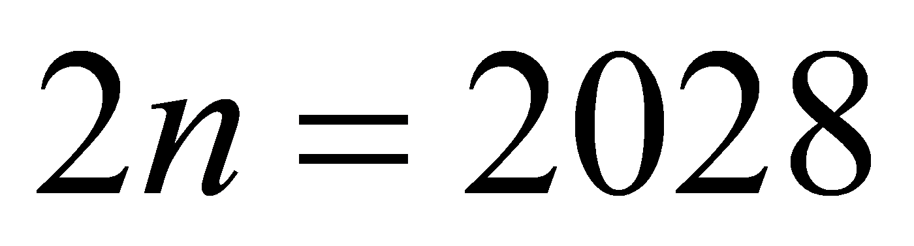
，解得：
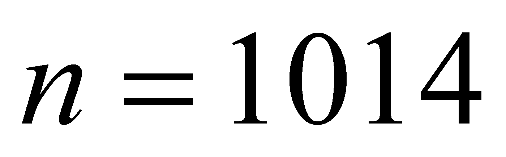
，则这个多边形的边数为．
【点睛】本题考查了多边形的对角线，解题的关键是掌握多边形的对角线形成的规律．
4．夏夏和数学小组的同学们研究多边形对角线的相关问题，邀请你也加入其中，请仔细观察下面的图形和表格，并回答下列问题：
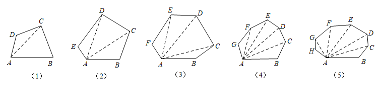
多边形的顶点数 | 4 | 5 | 6 | 7 | 8 | …… |
|
从一个顶点出发的对角线的条数 | 1 | 2 | 3 | 4 | 5 | …… | ① |
多边形对角线的总条数 | 2 | 5 | 9 | 14 | 20 | …… | ② |
(1)观察探究：请自己观察上面的图形和表格，并用含n的代数式将上面的表格填写完整，其中①________；②________.
(2)拓展应用：
有一个76人的代表团，由于任务需要每两人之间通1次电话（且只通1次电话），他们一共通了多少次电话?
【答案】(1)①，②
(2)他们一共通了2850次电话
【分析】（1）根据前面5个图形归纳类推出一般规律，由此即可得出答案；
（2）将问题转化为一个多边形的顶点数为76个，求这个多边形对角线的总条数与边数之和，再结合（1）的结论即可得．
【详解】（1）解：多边形的顶点数为4时，从一个顶点出发的对角线的条数为
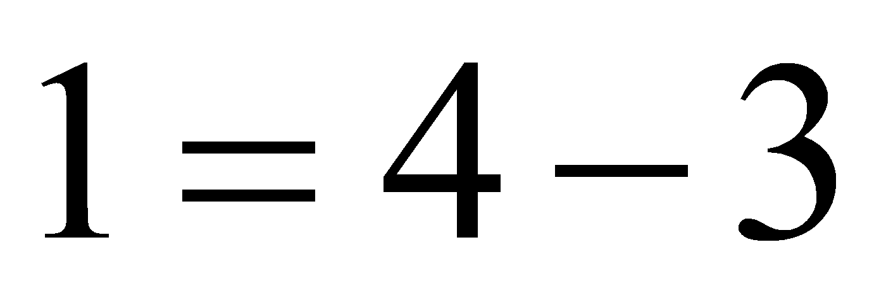
，多边形对角线的总条数为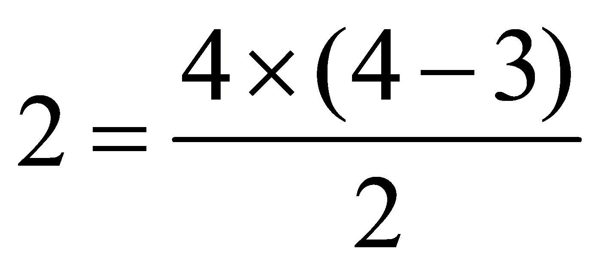
，多边形的顶点数为5时，从一个顶点出发的对角线的条数为
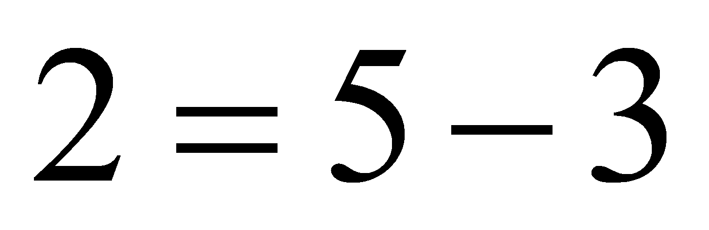
，多边形对角线的总条数为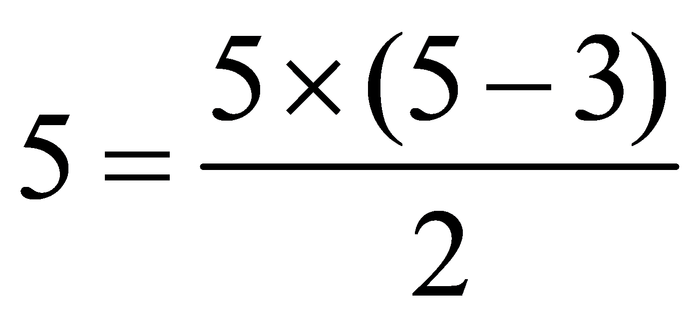
，多边形的顶点数为6时，从一个顶点出发的对角线的条数为
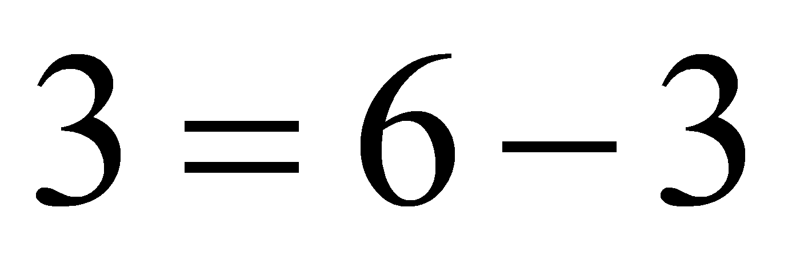
，多边形对角线的总条数为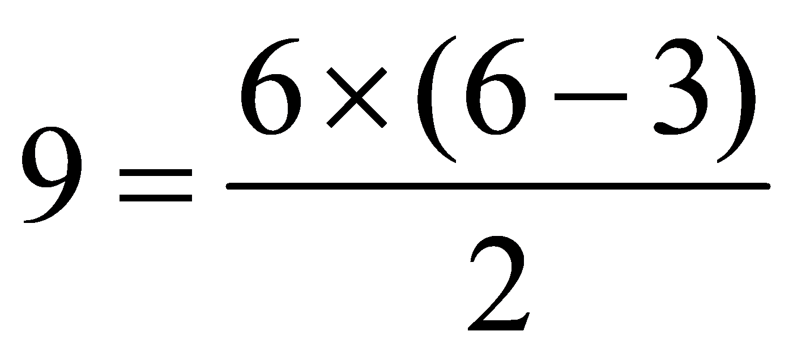
，多边形的顶点数为7时，从一个顶点出发的对角线的条数为
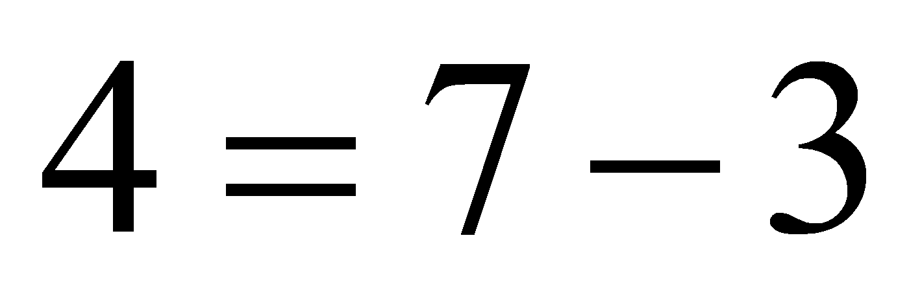
，多边形对角线的总条数为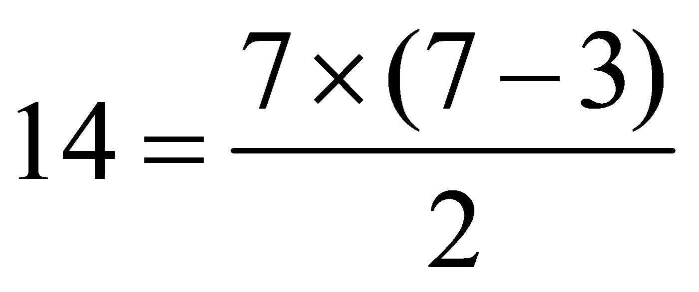
，多边形的顶点数为8时，从一个顶点出发的对角线的条数为
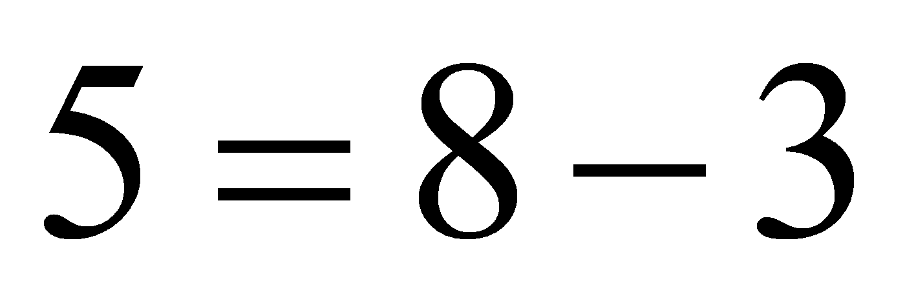
，多边形对角线的总条数为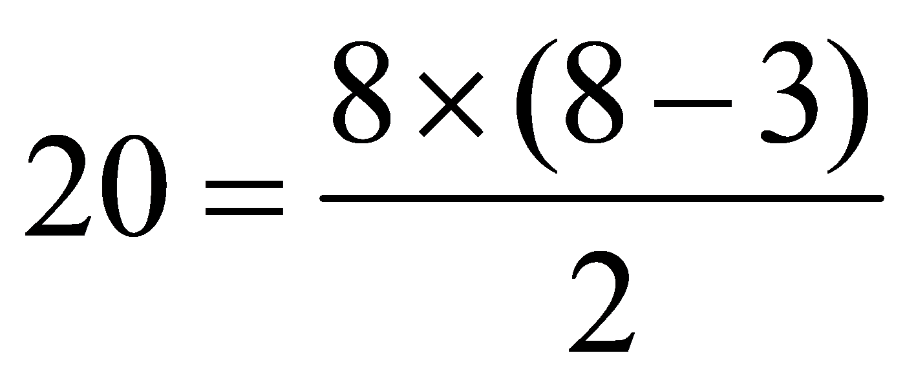
，归纳类推得：当多边形的顶点数为时，从一个顶点出发的对角线的条数为，多边形对角线的总条数为（其中
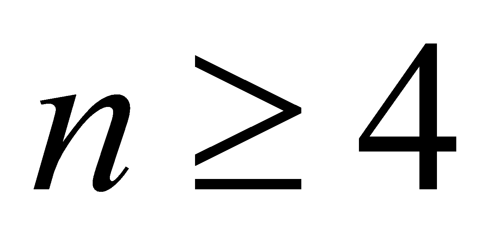
，且n为整数），故答案为：，．
（2）解：由题意，将问题转化为一个多边形的顶点数为76个，求这个多边形对角线的总条数与边数之和，
则
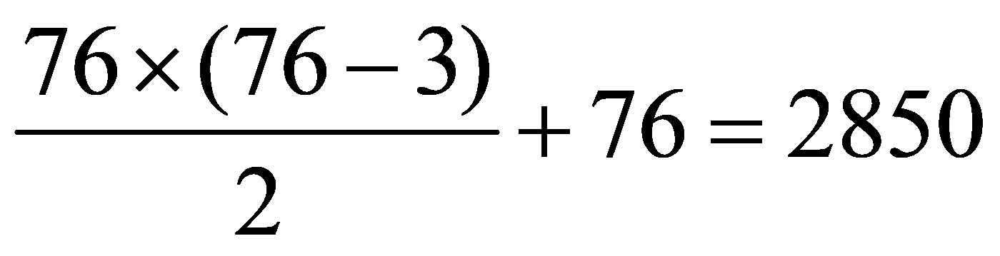
，答：他们一共通了2850次电话．
知识点02 圆
1.定义：平面上，一条线段OA绕着它固定的一个端点O旋转一周，另一个端点A所形成的图形。
2.相关概念：圆心是固定的端点O；半径是线段OA；圆弧是圆上任意两点间的部分；扇形是由一条弧和经过这条弧的端点的两条半径所组成的图形；圆心角是顶点在圆心的角。
3.扇形圆心角的度数：将一个圆分割成若干个扇形，这些扇形的圆心角度数之和等于360°，每一个扇形圆心角的度数=360°×这个扇形的圆心角占周角的百分比。
【即学即练】
1．下列说法：①直径是弦；②半径相等的圆叫同心圆；③长度相等的两条弧是等弧．其中正确的是（ ）
A．②③ B．①② C．①③ D．①
【答案】D
【分析】本题考查的是圆的认识．根据等圆、等弧的定义以及确定圆的条件，分别进行判断．
【详解】解：①直径是弦，说法正确；
②半径相等的圆是等圆，不是同心圆，原说法错误；
③同圆或等圆中，长度相等的两条弧是等弧，原说法错误．
综上，正确的只是①，
故选：D．
4．某中学原计划修一个半径为10米的圆形花坛，为使花坛修得更加美观，决定向全校征集方案，在众多方案中最后选出两种方案：
方案A如图1所示，先画一条直径，再分别以两条半径为直径修两个圆形花坛；
方案B如图2所示，先画一条直径，然后在直径上取一点，把直径分成2：3的两部分，再以这两条线段为直径修两个圆形花坛；（花坛指的是图中实线部分）
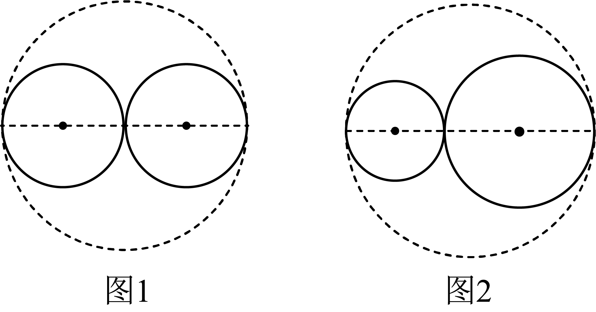
(1)如果按照方案A修，修的花坛的周长是 ．（保留π）
(2)如果按照方案B修，与方案A比，省材料吗？为什么？（保留π）
(3)如果按照方案B修，学校要求在5天内完成，甲工人承包了此项工程，甲每天能完成工程的 ，他做了1天后，发现不能完成任务，就请乙来帮忙，乙的速度是甲的2倍，乙加入后，甲的速度也提高了
，他做了1天后，发现不能完成任务，就请乙来帮忙，乙的速度是甲的2倍，乙加入后，甲的速度也提高了 ，结果正好按时完成任务，若修1米花坛可得到10元钱，修完花坛后，甲，乙各得到多少钱？（π取3）
，结果正好按时完成任务，若修1米花坛可得到10元钱，修完花坛后，甲，乙各得到多少钱？（π取3）
【答案】(1) 米
米
(2)不能省材料，理由见解析
(3)甲得到280元，乙得到320元
【分析】本题考查圆的周长公式，有理数混合运算解决实际问题．
（1）根据圆的周长公式：
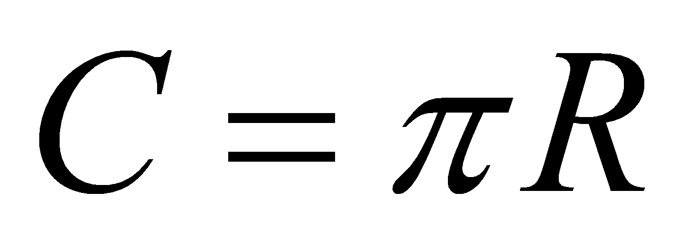
，把数据代入公式求此直径是10米的两个圆的周长即可；（2）求出B方案中两个小花坛的直径，再根据圆的周长公式即可两个小花坛的周长之和，与（1）进行比较即可；
（3）根据甲每天能完成工程的可求出甲原来每天的效率，进而可求出甲总共修花坛的工作量，进而求出其所得钱数，同理求出乙总共修花坛的工作量，进而求出其所得钱数．
【详解】（1）解：∵大圆花坛的半径为10米，则直径为20米，
∴两个小圆花坛的直径为 （米），
（米），
∴修两个花坛的周长为
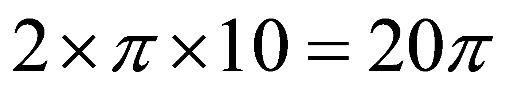
（米）．故答案为：米
（2）解：不能省材料，理由如下：
根据B方案，两个小圆花坛的直径分别为：
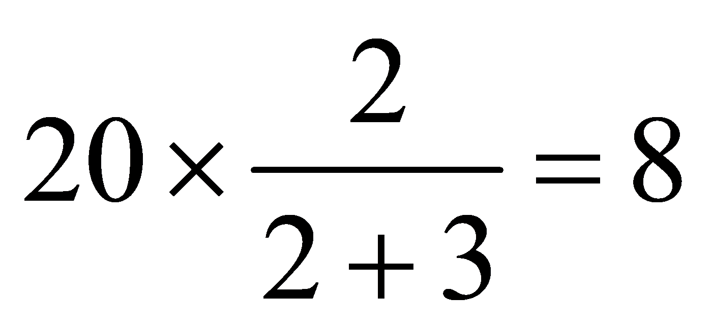
（米），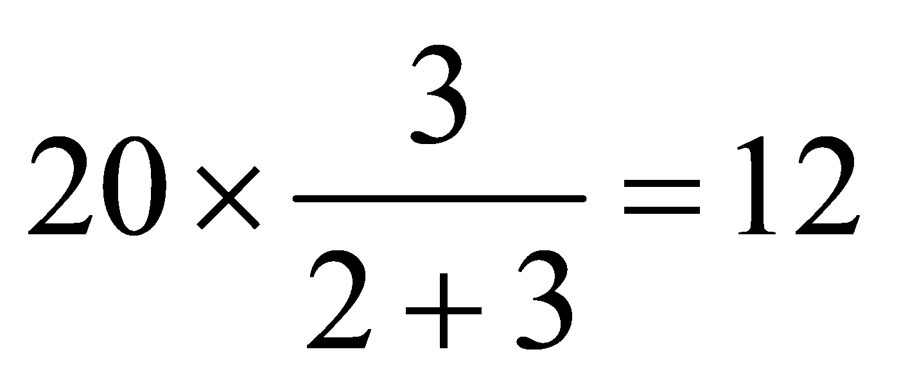
（米），它们的周长之和为
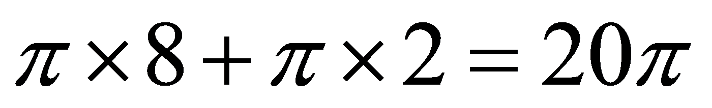
（米）∴方案B与方案A修的花坛的周长相等，
∴按照方案B修，与方案A比，不能省材料．
（3）解：整项工程为
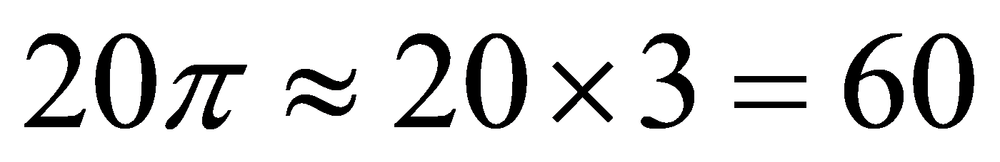
（米），甲原来每天可以修
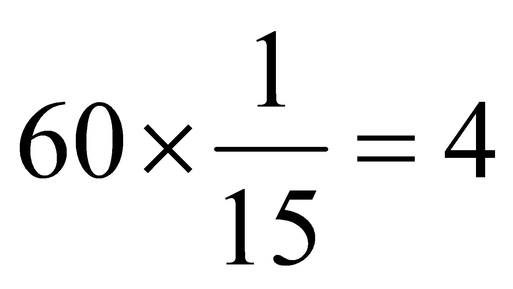
（米），甲总共修了
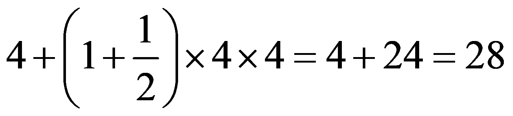
（米），甲得到的工资为
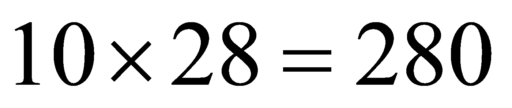
（元）；乙总共修了
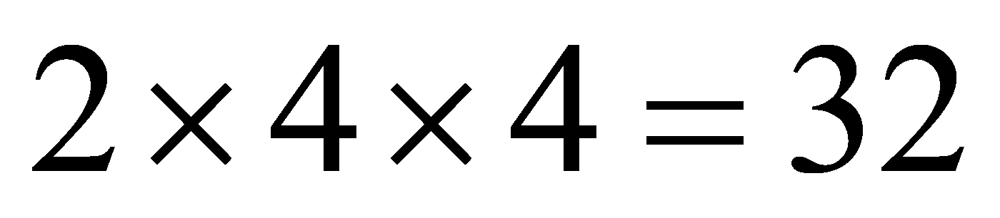
（米），乙得到的工资为
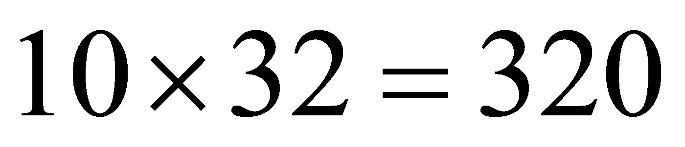
（元），答：甲得到280元，乙得到320元．

题型01 多边形的概念与分类
【典例1】如图所示的图形中，多边形的个数为（ ）
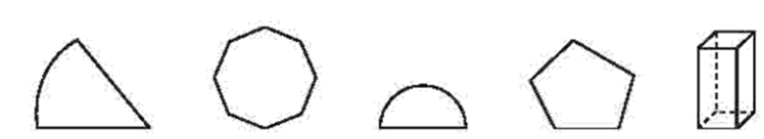
A．2 B．3 C．4 D．5
【答案】A
【分析】本题考查了多边形，关键是掌握多边形的定义．
在平面内，由一些线段首尾顺次相接组成的图形叫做多边形，由此即可判断．
【详解】解：题图中依次是扇形、八边形、半圆形、五边形和长方体，其中八边形和五边形是多边形，
所以多边形的个数为 ，
，
故选：A．
【变式1】下列多边形中，不是凸多边形的是（ ）
A． B．
B． C．
C． D．
D．
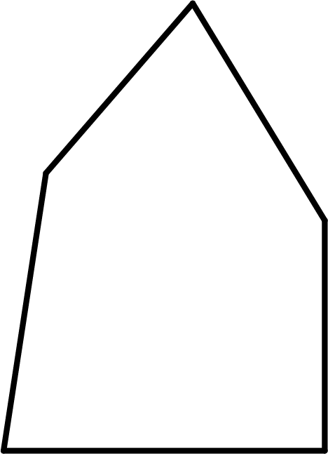
【答案】C
【分析】本题主要考查了凸多边形的定义，正确理解凸多边形的定义是解决此类问题的关键．
根据凸多边形的概念，如果多边形的边都在任何一条边所在的直线的同旁，该多边形即是凸多边形．否则即是凹多边形．
【详解】解：不是凸多边形的是选项C中的多边形．
故选：C．
【变式2】下列图形中不是多边形的是（ ）
A． B．
B． C．
C．
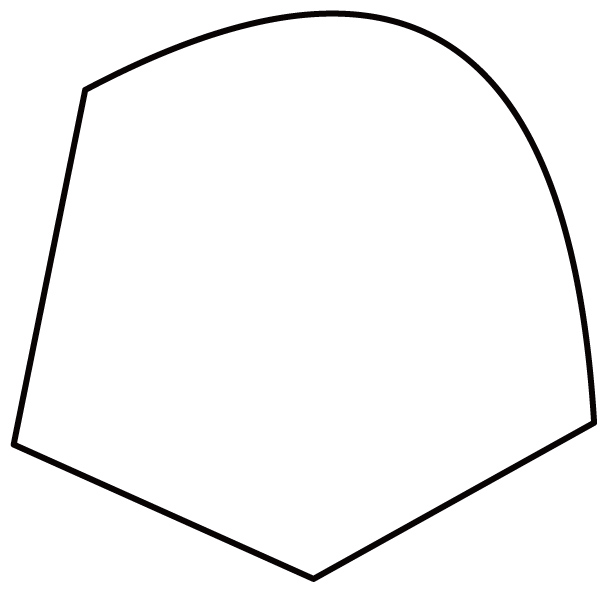
D．
【答案】C
【分析】本题主要考查多边形的定义，熟练掌握多边形的定义是解题的关键．根据多边形的定义即可得到答案．
【详解】
解：是三边形，是多边形，故选项A不符合题意；
是四边形，是多边形，故选项B不符合题意；
不是多边形，故选项C符合题意；
是六边形，是多边形，故选项D不符合题意；
故选：C．
【变式3】下列图形中，属于多边形的有（ ）

A．个 B． 个 C．
个 C． 个 D．
个 D． 个
个
【答案】B
【分析】本题考查了多边形的定义，根据多边形的定义进行判断即可，正确理解多边形的定义，平面内不在同一条直线上的几条线段首尾顺次相接组成的图形叫多边形．
【详解】解：根据多边形的定义，平面内不在同一条直线上的几条线段首尾顺次相接组成的图形叫多边形，
∴
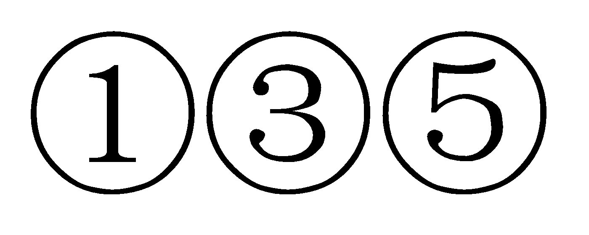
是多边形，共个，故选： ．
．
题型02 多边形的对角线的条数问题
【典例2】若一个多边形从一个顶点出发可引出6条对角线，则这个多边形是 边形．
【答案】九
【分析】本题考查了多边形的对角线：连接多边形不相邻的两个顶点的线段，叫做多边形的对角线．掌握n边形从一个顶点出发可引出 条对角线是解题的关键．据此求解即可；
条对角线是解题的关键．据此求解即可；
【详解】解：一个多边形从一个顶点出发可引出6条对角线，则这个多边形的边数为
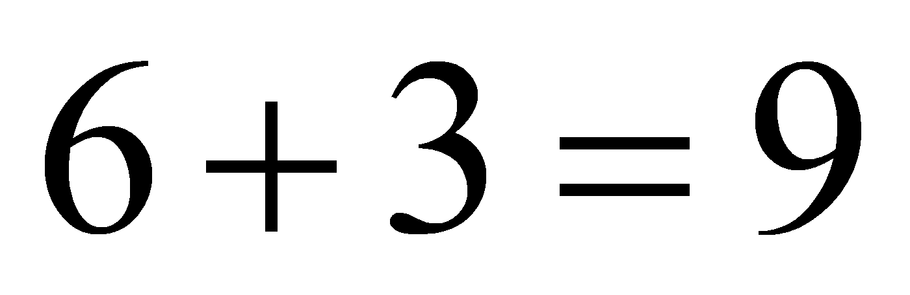
，故答案为：九．
【变式1】过某多边形的一个顶点可以引2024条对角线，则这个多边形的边数是 条
【答案】2027
【分析】本题可根据多边形对角线的相关性质来求解多边形的边数，即根据过 边形的一个顶点可引出条对角线这一关系建立方程求解．本题主要考查了多边形对角线的性质，熟练掌握过边形一个顶点可引出条对角线是解题的关键．
边形的一个顶点可引出条对角线这一关系建立方程求解．本题主要考查了多边形对角线的性质，熟练掌握过边形一个顶点可引出条对角线是解题的关键．
【详解】解：设这个多边形的边数为．
∵ 过边形的一个顶点可以引条对角线，且过该多边形的一个顶点可以引 条对角线
条对角线
∴
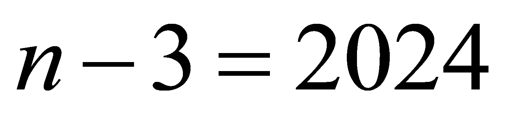
∴
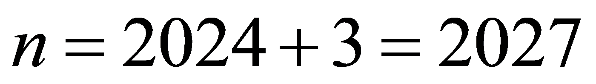
故答案为：
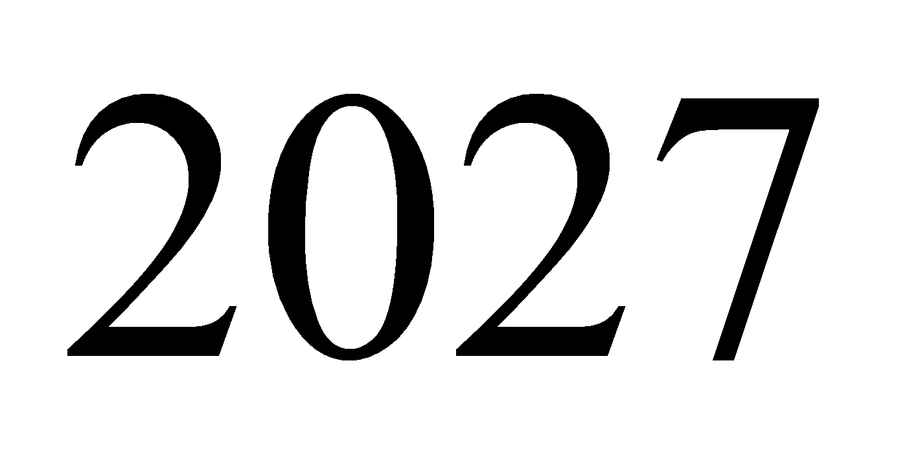
．【变式2】从一个多边形的任何一个顶点出发都只有4条对角线，则这个多边形的对角线共有 条．
【答案】14
【分析】本题考查了多边形的对角线：连接多边形不相邻的两个顶点的线段，叫做多边形的对角线．先由n边形从一个顶点出发可引出条对角线，求出n的值，再根据n边形对角线的总条数为
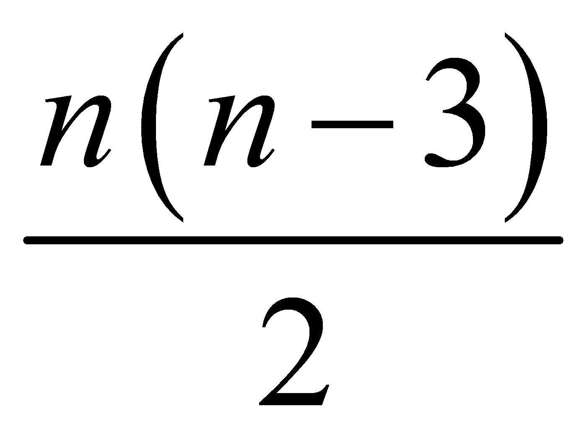
即可求出这个多边形所有对角线的条数．【详解】解：设这个多边形的边数是n，由题意，得，
解得 ，
，
所以这个多边形共有对角线：．
故答案为：14．
【变式3】过 边形的一个顶点，有8条对角线，边形没有对角线，五边形有
边形的一个顶点，有8条对角线，边形没有对角线，五边形有 条对角线，则
条对角线，则 的值为 ．
的值为 ．
【答案】216
【分析】本题主要考查了多边形的对角线，根据n边形从一个顶点出发可引出条对角线．从n个顶点出发引出条，而每条重复一次，所以n边形对角线的总条数为：，且n为整数，可得到m、n、p的值，进而可得答案．
【详解】解：∵过m边形的一个顶点有8条对角线，
∴，
解得，；
n边形没有对角线， ；
；
∵五边形有p条对角线，
∴，
所以．
故答案为：216．
题型03 多边形截角后的边数问题
【典例3】把一张形状是四边形的纸片剪去其中某一个角，剩下的部分的形状不可能是（ ）
A．三角形 B．四边形 C．五边形 D．六边形
【答案】D
【分析】本题考查了多边形．把一张形状是四边形的纸片剪去其中某一个角，剩下的部分的形状可能是三角形或四边形或五边形．
【详解】解：把一张形状是四边形的纸片剪去其中某一个角，剩下的部分的形状可能是三角形或四边形或五边形，不可能是六边形．
故选：D．
【变式1】若一个多边形截去一个角后，变成五边形，则原来的多边形的边数可能为（ ）
A．5或6 B．4或5 C．3或4或5 D．4或5或6
【答案】D
【分析】本题考查了多边形的知识，一个多边形截去一个角后，多边形的边数可能增加了一条，也可能不变或减少了一条．根据一个多边形截去一个角后，多边形的边数可能增加了一条，也可能不变或减少了一条，依此即可解决问题．
【详解】解：一个多边形截去一个角后，多边形的边数可能增加了一条，也可能不变或减少了一条，
则多边形的边数是4或5或6，
故选：D．
【变式2】若一个四边形截去一个角后，可能为（ ）边形
A．4或5 B．3或4
C．3或4或5 D．4或5或6
【答案】C
【分析】本题主要考查了多边形，解题的关键是理解多边形截去一个角的位置可得：比原多边形可能少1条边，可能边的条数不变，也可能增加1条边．
根据多边形截去一个角的位置可得：比原多边形可能少1条边，可能边的条数不变，也可能增加1条边；据此求解即可．
【详解】解：若一个四边形截去一个角后，可能为3或4或5边形．
故选：C．
【变式3】如图，四边形 去掉一个
去掉一个 后，剩下的新图形不可能是（ ）边形．
后，剩下的新图形不可能是（ ）边形．
A．三边形 B．四边形 C．五边形 D．六边形
【答案】D
【分析】本题考查了多边形，分情况，画出图形即可，能画出符合的所有情况是解题的关键．
【详解】解：如图所示，剩下的新图形可能是①三角形 ，②四边形，③五边形，不可能是六边形，
，②四边形，③五边形，不可能是六边形，
故选：D．
题型04 对角线分成的三角形个数问题
【典例4】如图所示的蜂巢由许多六边形构成，将六边形三角剖分，可以分割成三角形的个数为 ．
【答案】4
【分析】本题主要考查了多边形对角线分三角形个数问题，根据n边形最少可以分 个三角形即可得到答案，
个三角形即可得到答案，
【详解】解：如图所示，过点A的所有对角线，可分割六边形得到，
∴每个六边形至少可以分割成三角形的个数为4个，
故答案为：4．
【变式1】若从这个n边形的一边上任意取一点（不是顶点），分别连接这个点与其余各顶点，可以把n边形分成 个三角形．
【答案】
【分析】本题考查了多边形的对角线，熟练掌握以上知识点是解题的关键．
根据在多边形内部得到的线段条数推出对应的三角形的个数．
【详解】解：从边形的一边上任取一点，分别连接这个点与其余各顶点，可以在多边形内部得到条线段，可把这个边形分成个三角形．
故答案为：．
【变式2】若某多边形的一个顶点与和它不相邻的其他各顶点连接，可将多边形分成7个三角形，则该多边形的总对角线条数为 ．
【答案】27
【分析】本题考查了多边形的对角线，熟练掌握n边形的总对角线条数公式是解题的关键．
经过n边形的一个顶点的所有对角线把多边形分成个三角形，由此求出多边形的边数，再根据n边形的总对角线条数公式 计算即可．
计算即可．
【详解】解：若某多边形的一个顶点与和它不相邻的其他各顶点连接，可将多边形分成7个三角形，
则这个多边形的边数为，
所以该多边形的总对角线条数为＝27（条），
故答案为：27．
【变式3】如图所示，按某种方法将多边形分割成若干个三角形．图①中的三角形可分割出2个三角形，图②中的四边形可分割出3个三角形，图③中的五边形可分割出4个三角形，……．以此类推，n边形可分割出 个三角形．
【答案】
【分析】通过观察三角形、四边形、五边形分割成三角形的个数，分析多边形的边数与分割出的三角形个数之间的数量关系，进而归纳出一般规律．
【详解】解：观察图形可知：
当多边形为三角形时，可分割出个三角形，此时；
当多边形为四边形时，可分割出个三角形，此时 ；
；
当多边形为五边形时，可分割出个三角形，此时；
以此类推，对于边形，分割出的三角形个数为 ．
．
故答案为：．
【点睛】本题考查了图形的规律探索，解题关键是通过观察特殊多边形的分割结果，归纳出边形的一般规律．
题型05 圆的基本概念辨析
【典例5】下列说法：①直径是弦；②弦是直径；③半圆是弧，弧不一定是半圆；④优弧一定大于劣弧；⑤直径是圆中最长的弦．其中正确的说法为（ ）
A．①③④ B．①③⑤ C．②③⑤ D．③④⑤
【答案】B
【分析】本题考查的是对圆的认识，弦，直径，弧，半圆，等弧的概念，对每个说法进行判断，然后作出选择．
【详解】解：①直径是弦，故原说法正确；
②弦不一定是直径，故原说法错误；
③半圆是弧，但弧不一定是半圆，故原说法正确；
④在同圆或等圆中，优弧一定大于劣弧，故原说法错误；
⑤直径是圆中最长的弦，故原说法正确．
综上所述，正确的说法有①③⑤．
故选：B．
【变式1】下列说法正确的是（ ）
A．直径是弦，弦是直径
B．半圆是弧
C．无论过圆内哪一点，只能作一条直径
D．长度相等两条弧是等弧
【答案】B
【分析】本题主要考查了圆的相关概念，根据圆的基本概念逐一分析选项．
【详解】解：A．直径是弦，但弦不一定是直径（只有过圆心的弦才是直径），故A错误．
B． 半圆是圆周的一部分，属于弧，且为 的弧，故B正确．
的弧，故B正确．
C． 过圆心可以作无数条直径，过圆内非圆心的点不能作直径，故C错误．
D．等弧需在同圆或等圆中长度相等且能够重合，仅长度相等不一定为等弧，故D错误．
故选：B
【变式2】下列说法：①弦是直线；②圆的直径被该圆的圆心平分；③过圆内一点P的直径仅有一条；④弧是圆的一部分．其中正确的有（ ）
A．1个 B．2个 C．3个 D．4个
【答案】B
【分析】本题主要考查圆的基本概念，包括弦、直径、弧的定义和性质，掌握这些知识是解题的关键．
逐一分析各说法是否正确：①弦是线段而非直线；②直径过圆心，被圆心平分；③过圆内非圆心的点有且只有一条直径，过圆心则有无数条；④弧是圆的一部分．
【详解】解：①：弦是圆上两点间的线段，而非直线，故错误；
②：直径是过圆心的弦，圆心是直径的中点，因此被圆心平分，故正确；
③：若点 为圆心，过的直径有无数条；若非圆心，则有且只有一条直径过，故错误；
为圆心，过的直径有无数条；若非圆心，则有且只有一条直径过，故错误；
④：弧是圆上两点间的部分，属于圆的一部分，正确．
故选：B．
【变式3】说法：①直径是圆中最长的弦，弦是直径；②半径相等的两个半圆是等弧；③半圆是弧，但弧不一定是半圆；④长度相等的两条弧是等弧；⑤经过圆内一定点可以作无数条直径．其中正确的有（ ）
A．1个 B．2个 C．3个 D．4个
【答案】B
【分析】本题主要考查了圆的相关概念，解决本题的关键是掌握相关的概念．先回忆弦、直径、弧、半圆、等弧等相关的概念，然后根据相关概念来逐个判断即可．
【详解】①直径是圆中最长的弦，但弦不一定是直径，错误；
②半径相等的两个半圆是等弧，正确；
③半圆是弧，但弧不一定是半圆，正确；
④在等圆或同圆中，长度相等的两条弧是等弧，错误；
⑤如果该定点和圆心不重合，根据两点确定一条直线，则只能作一条直径，错误；
综上，正确的有：②③，共2个，
故选：B．
题型06 圆心角概念辨析及简单运算
【典例6】如图，在 中，劣弧
中，劣弧 的度数为，则圆心角
的度数为，则圆心角
 .
.
【答案】
【分析】的度数即为所对圆心角的度数；
【详解】解：的度数即为所对圆心角的度数；
∴
故答案为：
【点睛】本题考查了弧与圆心角的关系；正确理解圆心角的定义是解题的关键．
【变式1】如图，把一个圆分成三个扇形，你能求出这三个扇形的圆心角吗？
【答案】．
【分析】根据扇形所占的百分比即可求出圆心角．
【详解】∵周角是360°，
∴，
，
．
【点睛】此题考查了扇形所占的百分比和扇形圆心角之间的关系，解题的关键是熟练掌握扇形所占的百分比和扇形圆心角之间的关系．扇形的圆心角=360°×百分比．
【变式2】如图，圆心角．
(1)判断 和
和 的数量关系，并说明理由；
的数量关系，并说明理由；
(2)若 ，求
，求 的度数．
的度数．
【答案】(1) ，见解析
，见解析
(2)
【分析】（1）根据条件和，即可求解；
（2）根据第（1）问的结论和即可求解．
【详解】（1）解：；
∵，，，
∴
（2）解：∵，，，，
∴，
∴；
【点睛】本题考查了简单几何问题，灵活运用所学知识是关键．
题型07 圆的周长和面积问题
【典例7】一个运动场如图，两端是半圆形，中间是长方形．这个运动场的周长是多少米？面积是多少平方米？
【答案】这个运动场的周长是米，面积是平方米．
【分析】本题考查了长方形，圆的周长和面积，运动场的周长是中间长方形的两条长加上圆的周长，运动场的面积是中间长方形的面积加上圆的面积，即可求解，掌握相关知识是解题的关键．
【详解】解：这个运动场的周长是：（米），
这个运动场的面积是：（平方米），
答：这个运动场的周长是米，面积是平方米．
【变式1】如图所示，半径为1厘米的小圆盘（娃娃脸）沿着长方形内壁，从 点出发不停滚动（无滑动），最后到原来的位置．小圆盘在
点出发不停滚动（无滑动），最后到原来的位置．小圆盘在  、
、 、
、 位置是怎样的，请你计算一下并画出示意图．
位置是怎样的，请你计算一下并画出示意图．
【答案】见解析
【分析】本题考查了圆的周长公式，熟记公式并灵活运用是解题的关键．
根据圆的周长公式计算即可．
【详解】解：到转了（圈），
到转了（圈），
作图如下：
．
【变式2】如图，是的直径，把分成几条相等的线段，以每条线段为直径分别画小圆，设 ，那么的周长，的面积．
，那么的周长，的面积．

(1)探究：①把分成两条相等的线段，每个小圆的周长；
②把分成三条相等的线段，每个小圆的周长记作，
③把分成四条相等的线段，每个小圆的周长 ，…
，…
④把分成条相等的线段，每个小圆的周长．
分别求出，，；
(2)类比探究：仿照（1）的探索过程，当把大圆直径平均分成等分时，以每条线段为直径画小圆，求每个小圆的面积与大圆面积 之间的关系．
之间的关系．
【答案】(1)，，
(2)
【分析】本题考查了圆的周长、面积．正确求出小圆的半径是解题的关键．
（1）把分成三条相等的线段，则小圆半径为，每个小圆的周长为；同理，把分成四条相等的线段，每个小圆的周长为；把分成条相等的线段，每个小圆的周长为；
（2）由题意知，把大圆直径平均分成等分时，小圆半径为，则每个小圆的面积．
【详解】（1）解：由题意知，把分成三条相等的线段，则小圆半径为，
∴每个小圆的周长为；
把分成四条相等的线段，则小圆半径为，
∴每个小圆的周长为；
把分成条相等的线段，则小圆半径为，
∴每个小圆的周长为；
∴，，；
（2）解：由题意知，把大圆直径平均分成等分时，小圆半径为，
∴每个小圆的面积，
∴．

一、单选题
1．一个八边形从一个顶点出发，引出对角线的条数是（ ）
A．2 B．3 C．4 D．5
【答案】D
【分析】本题考查多边形的对角线．n（ )边形从一个顶点可以做
)边形从一个顶点可以做 条对角线．
条对角线．
将 代入
代入 计算即得．
计算即得．
【详解】解：从八边形的一个顶点可引出的对角线的条数有条．
故选：D．
2．下列说法正确的是（ ）
A．圆的周长都相等
B．圆上任意两点间的部分叫做圆弧
C．顶点在圆上的角叫做圆心角
D．由一条弧和经过这条弧的两个端点的两条线段组成的图形叫做扇形
【答案】B
【分析】本题考查了圆的概念理解，熟练掌握知识点是解题的关键．
根据圆的周长、圆弧、圆心角、扇形的定义分别判断即可．
【详解】解：A、半径相等的圆的周长相等，原说法错误，不符合题意；
B、圆上任意两点间的部分叫做圆弧，正确，符合题意；
C、顶点在圆心的角叫做圆心角，原说法错误，不符合题意；
D、由一条弧和经过这条弧两端的两条半径所围成的图形叫扇形，原说法错误，不符合题意；
故选：B．
3．过多边形的一个顶点的所有对角线把这个多边形分成了2025个三角形，则这个多边形的边数是（ ）
A．2024 B．2025 C．2026 D．2027
【答案】D
【分析】本题需要根据多边形过一个顶点的对角线分成三角形的个数与多边形边数的关系来求解．
【详解】设这个多边形的边数为
根据过边形的一个顶点的所有对角线把边形分成个三角形这一规律
已知过该多边形一个顶点的所有对角线把这个多边形分成了 个三角形
个三角形
所以可列方程：
移项可得．
故答案为：D．
【点睛】本题考查了多边形的对角线，掌握过边形的一个顶点的所有对角线把边形分成个三角形，利用这一规律建立方程求解多边形的边数是解题的关键．
4．从五边形的一个顶点出发，可以画m条对角线，它们将五边形分成n个三角形，则 的值为（ ）
的值为（ ）
A．5 B．6 C．7 D．8
【答案】A
【分析】本题考查多边形的对角线，边形从一个顶点出发可引出条对角线，它们把边形分成个三角形，由此即可计算．
【详解】解：∵从五边形的一个顶点出发，可以画出条对角线，它们将五边形分成个三角形，
，
∴的值为．
故选：A．
5．如图， 个正方形的边长均为
个正方形的边长均为 ，则涂色部分的面积是
，则涂色部分的面积是 的图有（ ）
的图有（ ）

A． 个 B．
个 B． 个 C．
个 C． 个 D．个
个 D．个
【答案】C
【分析】本题考查了求不规则图形的面积．
由图可知，前三个图形空白部分面积均与直径为的圆的面积相同，第四个图形涂色部分的面积与直径为的圆的面积相同，计算后判断即可．
【详解】①涂色部分的面积是，符合题意；
②涂色部分的面积是，符合题意；
③涂色部分的面积是，符合题意；
④涂色部分的面积是，不符合题意；
即涂色部分的面积是的图有个，
故选：C．
6．如图，某同学探究n边形的内角和公式，首先将以顶点 为端点的对角线
为端点的对角线 、、、、
、、、、 、连接，将此n边形分割成个三角形，然后由每个三角形的内角和为
、连接，将此n边形分割成个三角形，然后由每个三角形的内角和为 ，可得n边形的内角和为．该同学的上述探究方法所体现的数学思想是（ ）
，可得n边形的内角和为．该同学的上述探究方法所体现的数学思想是（ ）

A．分类讨论 B．公理化 C．类比 D．转化
【答案】D
【分析】本题主要考查了多边形的内角和公式、数学思想等知识点，掌握转化的数学思想是解题的关键．
根据题意即可解答．
【详解】解：探究多边形内角和公式时，从n边形的一个顶点出发引出条对角线，将n边形分割成个三角形，这个三角形的所有内角之和即为n边形的内角和，这一探究过程运用的数学思想是转化思想．
故选D．
二、填空题
7．八边形共有 条对角线．
【答案】20
【分析】根据多边形对角线公式，边形对角线公式为 ，将代入公式计算八边形对角线的数量．本题主要考查了多边形对角线公式，熟练掌握边形对角线公式是解题的关键．
，将代入公式计算八边形对角线的数量．本题主要考查了多边形对角线公式，熟练掌握边形对角线公式是解题的关键．
【详解】解：∵ 边形对角线的条数公式为，这里
∴ 八边形对角线的条数为
故答案为： ．
．
8．连接多边形不相邻两个顶点的线段叫做多边形的对角线，若从多边形的一个顶点可以引出九条对角线，则这个多边形是 边形．
【答案】十二
【分析】本题考查了多边形对角线数量问题，掌握多边形从一个顶点可以引出条对角线是解题的关键．
根据n边形从一个顶点可以引出条对角线即可求解．
【详解】解：∵从多边形的一个顶点可以引出九条对角线，
∴，则这个多边形是十二边形，
故答案为：十二．
9．在 中，点B，O，C和点A，O，D分别在同一条直线上，则图中 是弦， 是直径， 是以A为端点的劣弧， 是以A为端点的优弧．（把满足要求的答案全部填上）
中，点B，O，C和点A，O，D分别在同一条直线上，则图中 是弦， 是直径， 是以A为端点的劣弧， 是以A为端点的优弧．（把满足要求的答案全部填上）
【答案】  ，
， ，
，
 ，，
，，  ，
，
【分析】本题考查圆中弦，直径，劣弧，优弧的定义，掌握知识点是解题的关键．根据圆的弦，直径，劣弧，优弧的定义即可解答．
【详解】解：由图，得：，，是弦，是直径，，，是以A为端点的劣弧， ，是以A为端点的优弧．
故答案为：，，；；，，； ，．
10．从一个多边形的同一个顶点出发，分别连接这个顶点与其余各顶点，可以把这个多边形分割成若干个三角形．根据下面的图形反映出来的规律，n边形从一个顶点出发被分割成的三角形的个数为 ．
【答案】
【分析】本题主要考查的是多边形对角线的性质，根据从一个n边形的某个顶点出发，可分成个三角形，由所给图形得到分成的三角形的个数和多边形的边数的关系的规律即可解答．
【详解】解：四边形从一个顶点出发被分割成的三角形的个数为 个，
个，
五边形从一个顶点出发被分割成的三角形的个数为 个，
个，
六边形从一个顶点出发被分割成的三角形的个数为个，
 ；
；
边形从一个顶点出发被分割成的三角形的个数为个，
故答案为：．
11．用对角线把多边形分成几个三角形，叫做“多边形的三角剖分”．如图，凸四边形 ，有两种剖分方式（如图示）；20世纪，数学家乌尔班发现并证明了下面的公式：
，有两种剖分方式（如图示）；20世纪，数学家乌尔班发现并证明了下面的公式： （n表示凸n边形的三角剖分数）请你用上面的公式计算 ．
（n表示凸n边形的三角剖分数）请你用上面的公式计算 ．

【答案】14
【分析】本题考查了多边形的对角线，解答本题的关键是发现．根据，可得出 ，由可得出．
，由可得出．
【详解】解：∵，，
∴，
∵，
∴；
故答案为14．
12．工厂生产一种图①所示的螺丝垫圈，其示意图如图②所示．已知，则这个螺丝垫圈底部圆环的面积为  （结果保留
（结果保留 ）．
）．
【答案】
【分析】本题主要考查圆的面积，根据“圆环的面积=大圆的面积-小圆的面积”计算即可．
【详解】解：圆环的面积
，
故答案为： ．
．
三、解答题
13．如图所示，分别以AB，BC和AC为直径作弧．已知 ，
， ．
．

(1)比较①②两条从点A到点C的路线，走哪条路更近？
(2)如果 ，
， ，那么①②两条从点A到点C的路线的长度相比，有什么变化呢？你得到了什么样的结论？
，那么①②两条从点A到点C的路线的长度相比，有什么变化呢？你得到了什么样的结论？
【答案】(1)走两条路一样近
(2)①②两条路线的长度相比，没有变化，仍然相等；结论：不论的长度怎么变化，①②两条路线的长度都相等
【分析】（1）利用圆的弧长公式（半圆的弧长为， 为直径）计算两条路线的长度；
为直径）计算两条路线的长度；
（2）用字母 表示直径，同样根据弧长公式计算并比较，进而得出结论．
表示直径，同样根据弧长公式计算并比较，进而得出结论．
【详解】（1）解：路线①的长度，
路线②的长度．
故走两条路一样近．
（2）解：路线①的长度，
路线②的长度．
故①②两条路线的长度相比，没有变化，仍然相等．
结论：不论的长度怎么变化，①②两条路线的长度都相等．
【点睛】本题考查了圆的弧长计算，掌握半圆的弧长公式，通过分别计算两条路线的弧长并比较，得出路线长度的关系是解题的关键．
14．如图所示的多边形分别为正五边形、正六边形、正十边形、正十二边形．

(1)在以上各正多边形中分别任选一个顶点作对角线，把各多边形分割为若干个三角形．
(2)根据（1）中你的分割结果提出猜想，并说明过正三十边形的一个顶点作对角线，能把正三十边形分割成多少个三角形．
(3)在（2）中，当把正三十边形换为任意三十边形时，结论是否还能成立？请说明理由．
【答案】(1)见解析
(2)猜想：分割成的三角形个数与多边形边数之间的关系为三角形的个数 多边形的边数
多边形的边数 ．正三十边形能分割成28个三角形．
．正三十边形能分割成28个三角形．
(3)结论仍能成立．理由见解析
【分析】（1）依题意画出对角线即可；
（2）根据过正五边形、正六边形、正十边形、正十二边形的一个顶点作对角线把多边形分割成三角形的个数总结出规律：过正边形从一个顶点作对角线把正边形分割成个三角形，从而可得过正三十边形的一个顶点作对角线，能把正三十边形分割成三角形的个数；
（3）根据过多边形的一个顶点作对角线，把多边形分割成三角形的个数与边的长短，角的大小无关即可得出答案．
【详解】（1）解：分割情况如图所示（答案不唯一）．
（2）解：过正五边形一个顶点作对角线把正五边形分割成个三角形，而；
过正六边形一个顶点作对角线把正六边形分割成个三角形，而；
过正十边形一个顶点作对角线把正十边形分割成 个三角形，而；
个三角形，而；
过正十二边形一个顶点作对角线把正十二边形分割成 个三角形，而；
个三角形，而；
根据分割结果猜想：分割成的三角形个数与多边形边数之间的关系为三角形的个数多边形的边数．
∴过正三十边形的一个顶点作对角线把正三十边形分割成个三角形，
（3）解：结论仍能成立．
理由：因为分割成的三角形个数只与多边形的边数有关，而与多边形边的长短、角的大小无关．
【点睛】此题主要考查了多边形的对角线，解决问题的关键是根据作图总结出规律：过正边形从一个顶点作对角线把正边形分割成个三角形，理解过多边形的一个顶点作对角线，把多边形分割成三角形的个数与边的长短，角的大小无关．
15．探究与归纳：

(1)如图①，经过点A可以作1条对角线；经过点B可以作 条对角线；经过点C可以作 条对角线；经过点D可以作 条对角线．通过以上分析和总结，图①共有 条对角线．
(2)运用（1）的分析方法，可得图②共有 条对角线，图③共有 条对角线．
(3)对于n边形（ ），共有 （用含n的式子表示）条对角线．
），共有 （用含n的式子表示）条对角线．
(4)对于n边形，从同一顶点出发的对角线把该多边形共分割成 （用含n的式子表示）个三角形．
【答案】(1)
(2) 

(3)
(4)
【分析】本题考查了多边形的对角线，发现多边形对角线公式是解题关键．
（1）（2）根据对角线的定义，可得答案；
（3）根据探索，可发现规律；
（4）根据探索，可发现规律从而得到答案．
【详解】（1）解：根据公式 当  时为
时为
通过以上分析和总结，图①共有条对角线．
（2）解：运用（1）的分析方法，通过画图，可得图②共有条对角线，图③共有条对角线．
（3）解：对于n边形（），从边形的一个顶点出发，可以作 条对角线，因为有个顶点，且每条对角线重复计算了一次，所以共有条对角线．
条对角线，因为有个顶点，且每条对角线重复计算了一次，所以共有条对角线．
（4）解：如图，四边形经过一个顶点可以作条对角线，它把四边形分为个三角形；
五边形过一个顶点作条对角线，把这个多边形分为个三角形；
六边形过一个顶点作条对角线，把这个多边形分为个三角形；
所以对于边形，从同一顶点出发的对角线把该多边形共分割成个三角形．
16．【找规律】阅读：平面内，由不在同一直线上的n条线段首尾顺次连接而成的图形叫作n边形．如：时叫作三角形， 时叫作四边形，时叫作五边形……连接n边形中不相邻的两个顶点之间的线段叫作n边形的对角线．如图，线段
时叫作四边形，时叫作五边形……连接n边形中不相邻的两个顶点之间的线段叫作n边形的对角线．如图，线段 ，
， 是四边形的对角线．
是四边形的对角线．

(1)从五边形 的一个顶点A出发，可以引 条对角线；从六边形的一个顶点可以引 条对角线；……从n边形的一个顶点可以引 条对角线；
的一个顶点A出发，可以引 条对角线；从六边形的一个顶点可以引 条对角线；……从n边形的一个顶点可以引 条对角线；
(2)五边形一共有 条对角线；
(3)n边形一共有 条对角线．
【答案】(1)2，3，
(2)5
(3)
【分析】（1）根据定义，得从五边形的一个顶点A出发，可以引条对角线；从六边形的一个顶点可以引条对角线；……从n边形的一个顶点可以引条对角线，解答即可；
（2）根据一个条，五边形有5个顶点，共有条，根据相同端点的线段是同一条相等，得五边形一共有条对角线，解答即可；
（3）根据题意，从从n边形的一个顶点可以引条对角线，n边形有n个顶点，共有条，根据相同端点的线段是同一条相等，得n边形一共有条对角线，解答即可．
本题考查了多边形的对角线的规律探索，熟练掌握从特殊到一般的数学思想是解题的关键．
【详解】（1）解：根据定义，得从五边形的一个顶点A出发，可以引条对角线；从六边形的一个顶点可以引条对角线；……从n边形的一个顶点可以引条对角线，
故答案为：2，3，．
（2）解：根据一个条，五边形有5个顶点，共有条，根据相同端点的线段是同一条相等，得五边形一共有条对角线，
故答案为：5．
（3）解：根据题意，从从n边形的一个顶点可以引条对角线，n边形有n个顶点，共有条，根据相同端点的线段是同一条相等，得n边形一共有条对角线，
故答案为：．
17．连接多边形不相邻的两个顶点的线段，叫做多边形的对角线，如图（1），、 是五边形的对角线．思考下列问题：
是五边形的对角线．思考下列问题：

(1)如图（2），边形中，过顶点可以画 条对角线，它们分别是 ；过顶点 可以画 条对角线，过顶点
可以画 条对角线，过顶点 可以画 条对角线．
可以画 条对角线．
(2)过顶点的对角线与过顶点的对角线有相同的吗？过顶点的对角线与过顶点的对角线有相同的吗？
(3)在此基础上，你能发现边形的对角线条数的规律吗？
【答案】(1)，，，
(2)过点的和过点的没有重复的，但和过点的有重复的和重复）
(3)边形的对角线条数的为
【分析】此题考查了多边形的对角线的知识．
（1）过点和任意不相邻的两点连接可得出到一条对角线；同理可得过点、的情况．
（2）过点的和过点的没有重复的，但和过点的有重复的和重复）；
（3）过每一点有条对角线，除去重复的即可得出总对角线的条数．
【详解】（1）解：过顶点可以画条对角线，它们分别是；
过顶点可以画条对角线，
过顶点可以画条对角线；
故答案为：，，，；
（2）解：过点的和过点的没有重复的，但和过点的有重复的和重复）；
（3）解：边形的一个顶点不能与它本身及左右两个邻点相连成对角线，故可连出条，
共有个顶点，应为条，这样算出的数，正好多出了一倍，所以再除以2．
即边形的对角线条数的为．
18．项目学习：生活中的密铺
【描述定义】在数学中用形状、大小完全相同的平面图形进行拼接，不留空隙且不重叠地铺满整个平面，称为平面图形的密铺（或称为平面镶嵌）．在现实生活中，地砖、墙砖、蜂巢等都用到了密铺的原理．
【知识储备】1．对于正边形，每个内角都相等，那么一个内角的度数是____________；
2．密铺的条件：当公共顶点处所有角的和为____________ ，并使相等的边重合．
，并使相等的边重合．
【任务一：寻找密铺】
1．下列正多边形中，能够单独密铺平面的是（ ）．（多选）
A．正三角形 B．正方形 C．正五边形 D．正六边形 E．正八边形
2．公园的一段甬道是用相同的五边形地砖拼铺而成的，如图1是拼铺图案的一部分，图2为图1中抽象出的一个五边形，其中 ，则
，则 的度数为____________．
的度数为____________．
【任务二：创作密铺】
七（1）班数学“智慧小组”提出：同时用“正方形+正八边形”的密铺方案，
数学“挑战小组”提出：同时用“正方形＋正六边形”的密铺方案；
请你思考并判断哪个小组方案可行，可进行如下验证：
验证方案：
1．“智慧小组”方案（正方形+正八边形）：设正方形x个，正八边形y个，根据题意，可得方程____________，可以找到方程的正整数解为____________；
2．“挑战小组”方案（正方形+正六边形）：设正方形m个，正六边形n个，根据题意，可得方程____________，发现方程____________（填：有或无）正整数解；
结论：由上可得，可行的方案是：________________________．
【任务三：应用密铺】
某小区广场计划用不同的正多边形地砖组合密铺（边长相同）．已有正三角形地砖，现打算购买正方形或正六边形地砖，与已有正三角形地砖进行共顶点组合密铺．请你设计两种共顶点组合密铺方案，并画出示意图．
方案1：用两种正多边形（只画一种情况），
方案2：用三种正多边形．
【答案】[知识储备] 1．；2． ；[任务一：寻找密铺] 1．；2．
；[任务一：寻找密铺] 1．；2． ；[任务二：创作密铺] 1．，；2．，无；结论：“智慧小组”方案；[任务三：应用密铺]方案1：见解析；方案2：见解析
；[任务二：创作密铺] 1．，；2．，无；结论：“智慧小组”方案；[任务三：应用密铺]方案1：见解析；方案2：见解析
【分析】本题考查多边形的内角和、正多边形的性质、平面镶嵌、二（三）元一次方程的解，熟练掌握相关知识并灵活运用是解答的关键．
[知识储备] 1．根据正多边形的性质及内角和公式求解即可；2．根据周角为可得答案；
[任务一：寻找密铺] 1．根据各正多边形性质和内角，结合镶嵌知识逐个判断即可；2．根据五边形的内角和求解即可；
[任务二：创作密铺]1．根据两个正多边形的内角，可得方程，进而可得解为；2．根据两个正多边形的内角，可得方程，进而分析方程无解；进而可得结论；
[任务三：应用密铺]方案1：分正三角形和正方形、正三角形和正六边形讨论求解即可；方案2：根据镶嵌原理和三个正多边形的内角度数列方程讨论求解即可．
【详解】解：[知识储备] 1．对于正边形，每个内角都相等，那么一个内角的度数是；
2．密铺的条件：当公共顶点处所有角的和为，并使相等的边重合．
[任务一：寻找密铺]
1．A、正三角形的每个内角为 ，且各边相等，能够单独密铺平面；
，且各边相等，能够单独密铺平面；
B．正方形的每个内角为 ，且各边相等，能够单独密铺平面；
，且各边相等，能够单独密铺平面；
C．正五边形的每个内角为，不能使公共顶点处所有角的和为，不能够单独密铺平面；
D．正六边形的每个内角为且各边相等，，能够单独密铺平面；
E．正八边形的每个内角为，不能使公共顶点处所有角的和为，不能够单独密铺平面；
故答案为：ABD；
2．∵五边形的内角和为，，
∴；
[任务二：创作密铺]
由于正方形的每个内角为，正八边形的每个内角为 ，正六边形的每个内角为，
，正六边形的每个内角为，
1．“智慧小组”方案（正方形+正八边形）：设正方形x个，正八边形y个，根据题意，可得方程，可以找到方程的正整数解为；
2．“挑战小组”方案（正方形+正六边形）：设正方形m个，正六边形n个，根据题意，可得方程，发现方程无正整数解；
结论：由上可得，可行的方案是：“智慧小组”方案；
[任务三：应用密铺]
方案1：①设正三角形x个，正方形y个，则，
∵x、y为正整数，
∴，
故可由3个正三角形和2个正方形组合密铺，如图：
②设正三角形m个，正六边形n个，则，
∵m、n为正整数，
∴或，
故可由2个正三角形和2个正六边形组合密铺或4个正三角形和1个正六边形组合密铺；
方案二：设正三角形a个，正方形b个，正六边形c个，则，
∵a、b、c为正整数，
∴，
故可由1个正三角形、2个正方形和1个正六边形组合密铺，如图：